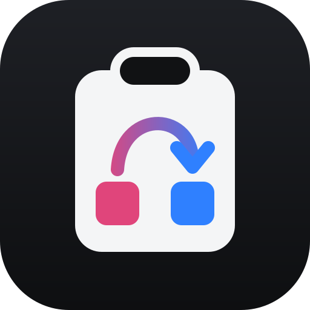

From
Nothing read yet.

MorphApps the pill appears in
People · email for @mentions
@mentions don’t carry an email, so add one here and pasted names become mail links (Docs, Gmail, Jira keep them). Names from what you just copied are listed first.
Reorder and select Apps. Drag a row, or use the arrows. The pill shows them in this order.
Click a key combination, then press the new one. Esc cancels.
Morph
Copy from one app, paste into another, and keep the formatting. Everything happens on your computer: nothing you copy is sent anywhere or stored.
Slack, Jira, Confluence, Google Docs, Notion, Linear, Markdown and other names and logos are trademarks of their owners and are used only to say which app a format is for. Morph is not affiliated with, endorsed by or sponsored by any of them. App marks are from Simple Icons (CC0); interface icons are Google Material Symbols (Apache-2.0).
Nothing read yet.